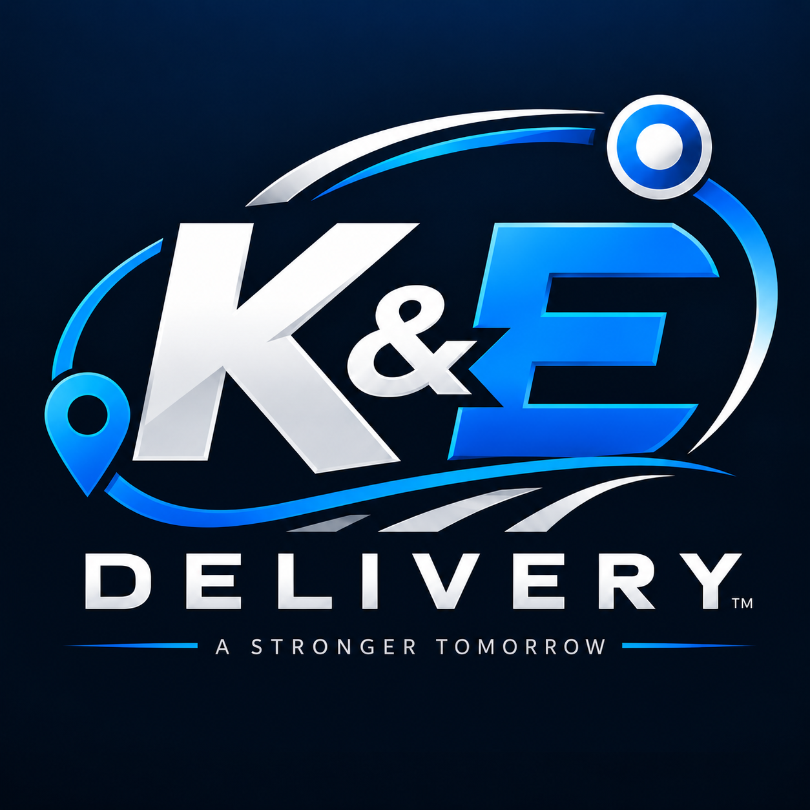
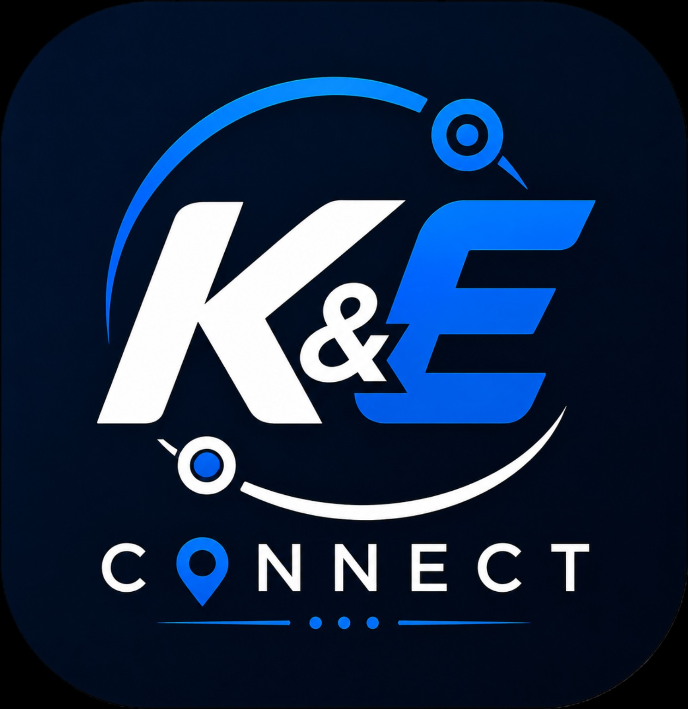
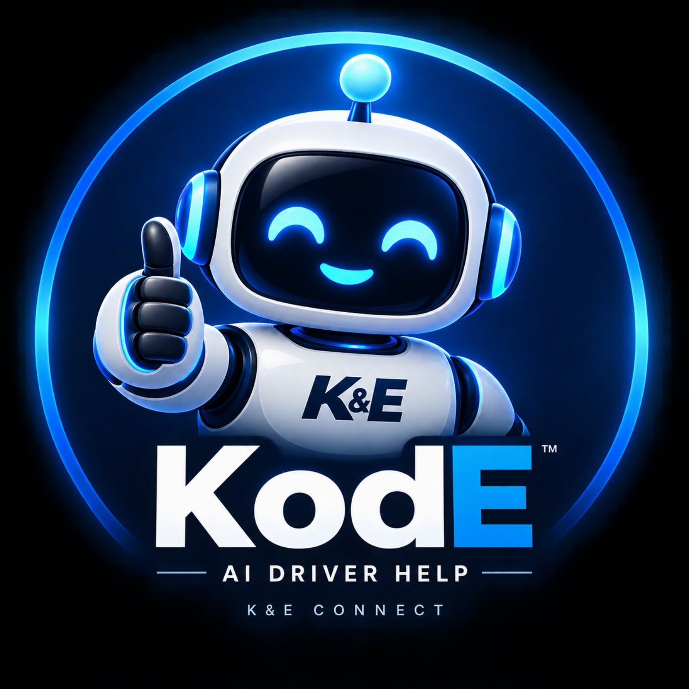

Airport Luggage Delivery
Professional pickup and final-mile delivery of passenger baggage from airport operations to customers.

AIRPORT LOGISTICS • LAST-MILE DELIVERY
K&E provides professional airport baggage delivery and last-mile logistics with dependable operations, accountable drivers, and technology built for the job.
K&E OPERATIONS
WHAT WE DO
Professional pickup and final-mile delivery of passenger baggage from airport operations to customers.
Dependable delivery support for baggage that needs to reach the passenger after their flight.
Structured routes, driver coordination, and delivery workflows designed for time-sensitive operations.
ABOUT K&E
K&E Freight Solutions / K&E Delivery Express is focused on reliable airport luggage delivery. Our operation combines experienced coordination, professional independent drivers, and clear delivery processes to move bags efficiently from airport pickup through final delivery.
OUR TECHNOLOGY
Our driver platform supports the delivery workflow from route acceptance through completion. KodE, our driver-support assistant, helps drivers access operational guidance when they need it.

Driver Platform
KodE • AI Driver HelperDRIVER OPPORTUNITIES
We work with professional independent delivery drivers who value reliability, communication, and excellent customer service.
Contact Us About DrivingCONTACT
For service inquiries, partnerships, or driver opportunities, contact K&E Delivery Express.
Kefreightsolutions@gmail.com